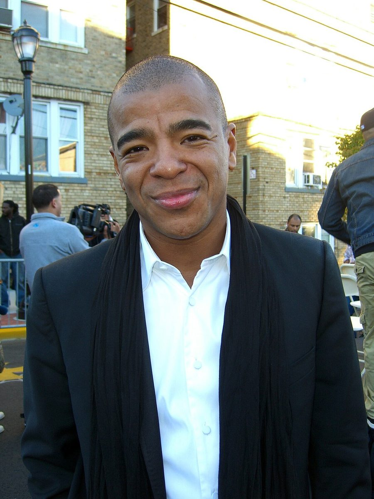

Erick Morillo [Audio]: New Years Eve party animal



STREAMING AUDIO INTERVIEW
One of the big guns of dance who’ll be here on NYE to provide the party vibes will be none other than house legend and Subliminal Records chief Erick Morillo. There’s plenty of big parties and events set to go off across all corners of the country this New Years Eve, but whatever sort of decadence or hedonistic behaviour you’ve got planned, you can be sure that Morillo is going to be partying a whole lot harder than you are. His schedule will see him DJing as one of the headliners at Sensation’s mighty debut in Melbourne, before hopping on a Lear Jet and flying to Sydney to drive it home for Pacha at Home Nightclub, with a performance that he promises will go well into the wee hours of the morning. Yep, it’s gonna be a big one.
“It’s gonna be a great new year,” Morillo told ITM. “To be able to do Sensation, which for me is probably one of the best organised dance events that I’ve ever seen in my life; these guys really spend a lot of money on production. To be able to play the first one in Australia is an honour.” This will go hand in hand with the club set that he’ll be playing later in the evening at Pacha in Sydney, so it’s set to be a memorable evening for Morillo, and one that’s guaranteed to go on for a long time. The last time that Morillo played a club set in Sydney, he didn’t leave the decks until midday the next day and he promises this is a tradition that he’s set to repeat this NYE.
“It goes back to one of the first times I visited Sydney and I played Sublime. I was meant to stop playing at five in the morning but I just kept going, and the people just stayed. It’s one of those things that doesn’t happen very often, but let me put it this way. If I have a crowd that will stay with me, I love DJing so I’ll play for 20 hours if I can. It’s all about having a crowd that gives you the energy to keep you going.”
Reckon you can party as hard as the big man behind the Subliminal Records stable? Well then, we’ll see who’s still standing at midday January 1st 2009. ITM’s Angus Paterson chats with Eric Morillo about his massive New Years Eve party plans.
Wanna the opportunity to fly from Sensation in Melbourne to Pacha in Sydney with Erick Morillo on his private Lear Jet? ITM is giving you the chance! Click here for the all the details, and get ready for a massive NYE.